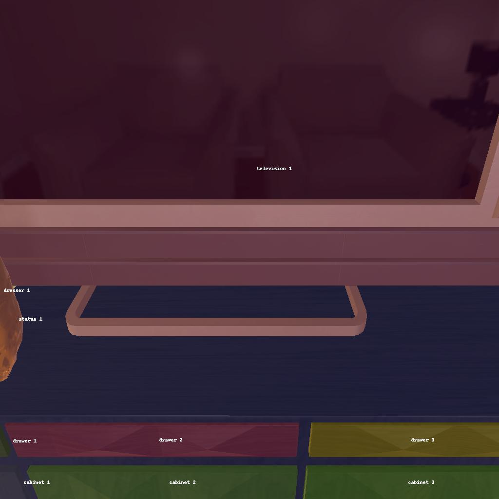

---------------------------------------------------------task: 7---------------------------------------------------------
--------------------------------------------------------------------------------------------------------------------------------------------------------------------
--------------------------------------------------------------------------------------------------------------------------------------------------------------------
Step:--------------------------------------------------------------------------12-------------------------------------------------------------------------------
----------------------------------------
VLM Prompt:
Image1:
Image2:
Image3:
**Instruction**
1. Analyze the provided image to identify all visible household objects, focusing on those relevant to the task description "put a creditcard in coffeetable."
2. Use the analysis of the image and the task hint "The agent must find an object of the desired type, pick it up, find the correct location to place it, and put it down there." to answer the question: what is the most reasonable action in the choices for the task description "put a creditcard in coffeetable"?
4. Decide and write the answer using the template: The answer is: (i): , where i is the real number. If there is no desired object in the image, search every place based on **Initial Observation** to find the object. And if no one is exactly correct, choose a similar answer.
**Initial Observation**
You are in the middle of a room. Looking quickly around you, you can see armchair (1-2), dresser (1), garbagecan (1), cabinet (1-4), drawer (1-4), coffeetable (1), sidetable (1), sofa (1)
**Answer Choices**
(1): go to armchair 1
(2): go to armchair 2
(3): go to garbagecan 1
(4): go to cabinet 1
(5): go to drawer 1
(6): go to cabinet 2
(7): go to drawer 3
(8): go to cabinet 3
(9): go to drawer 4
(10): go to cabinet 4
(11): go to coffeetable 1
(12): go to sidetable 1
(13): go to sofa 1
(14): open drawer 2
(15): close drawer 2
(16): examine drawer 2
**Answer**
Let's think step by step by following the instructions.
----------------------------------------
----------------------------------------
Original Response:
The task description is "put a creditcard in coffeetable," which implies that we need to find a credit card and place it on the coffeetable. The task hint suggests that the agent must find the object (credit card), pick it up, find the correct location (coffeetable), and put it down there.
Based on the **Initial Observation**, the coffeetable is mentioned, so we know where to place the credit card once found. However, the credit card itself is not listed among the visible objects, which means we need to search for it.
Among the answer choices, the most reasonable action to find a credit card would be to look in places where one might typically keep a credit card, such as in a drawer or a cabinet. Since we cannot see any credit card in the image provided, we should follow the instruction to search every place based on the **Initial Observation**.
The answer is: (5): go to drawer 1. Drawer 1 is the first place to search as it is commonly a place to keep valuable small items like a credit card. Once the credit card is found, the next reasonable action would be to go to the coffeetable to complete the task.
----------------------------------------
----------------------------------------
>>> Refine Original VLM Response and Get Pure Action: go to drawer 1
----------------------------------------
-----------------------------------------------------------------
Running time: 37.1845006942749 seconds
Total Money: 4.079929999999999
-----------------------------------------------------------------
-----------------------------------------------------------------
Text Observation:You arrive at loc 5. The drawer 1 is closed.
-----------------------------------------------------------------
UNSUCCEED